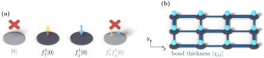

Advanced Quantum Materials 2027 · All lectures · Lecture notes
Session 8. Quantum Magnetism, Spinons and Kondo Physics
8.6 The resonating valence bond wavefunction as the QSL ground state
For a frustrated Heisenberg Hamiltonian \(\mathcal H = \sum_{ij} J_{ij}\, \mathbf S_i\cdot\mathbf S_j\), we do not expect the ground state to be one fixed dimer covering as in (8.5). Instead, we expect a linear combination of singlets over every possible pairing of sites, where each pairing has its own amplitude, which is a complicated many-body wavefunction. We could try to treat this directly, for example by writing it as a tensor network as in Session 7 for the general strongly correlated case. There is, however, a way that is easier to understand physically, which is a variational ansatz based on an analogy with superconductivity.
The idea is that the singlets in a QSL are similar to the Cooper pairs in an s-wave superconductor, since both are singlet correlations between pairs. A BCS-type wavefunction is easy to write at the mean-field level in the right basis, which is the Nambu space as in Session 5. So we start from a BCS-paired state built from the same auxiliary fermions \(f_{i\sigma}\) that we will justify in detail in Section 8.8,
\[|\Psi_\text{BCS}\rangle = \prod_{\mathbf k}\Big(u_{\mathbf k} + v_{\mathbf k}\, f^\dagger_{\mathbf k\uparrow} f^\dagger_{-\mathbf k\downarrow}\Big)|0\rangle, \tag{8.6}\]
where \(u_{\mathbf k}, v_{\mathbf k}\) are variational parameters, as in the BCS state of Session 5. By itself, (8.6) is a superposition of states with every possible number of fermions per site, which can be empty, singly occupied or doubly occupied. This is not a physical spin state at all. A QSL has strong local interactions, so we need single occupation on every site, and no charge fluctuations between sites are allowed. We impose this condition with a Gutzwiller projector onto the singly-occupied subspace,
\[|\Psi_\text{RVB}\rangle = P_G\,|\Psi_\text{BCS}\rangle, \qquad P_G = \prod_i n_i(2-n_i), \qquad n_i = \sum_\sigma f^\dagger_{i\sigma}f_{i\sigma}, \tag{8.7}\]
which gives \(1\) for states with exactly one fermion per site and \(0\) for all other states. What remains is a real many-body spin wavefunction. It is a superposition over the different ways to pair sites into singlets, in the same spirit as the singlet of a single dimer (8.3), but now over a whole frustrated lattice. The name of this construction describes what it is, and it is called the resonating valence bond (RVB) variational wavefunction. It turns out to be a good description of the physics of quantum spin liquids. Figure 8.3 shows what makes this resonating state, and the excitations that it has, different from the frozen dimer covering of Section 8.5.

Why do we apply the Gutzwiller projector \(P_G\) to the BCS state (8.6)?
Show the answers
- A. ✗ False
This is false. The singlet pairing \(\Delta(c^\dagger_\uparrow c^\dagger_\downarrow-c^\dagger_\downarrow c^\dagger_\uparrow)\) has total spin zero, and it is invariant under spin rotations. The projector is not needed for this.
- B. ✓ True
This is true. In the BCS state of (8.6) the number of fermions on a site fluctuates between zero and two. Projecting onto single occupancy leaves only the spin degrees of freedom.

Figure 8.4, shown again. Look at the two crossed states, the empty and the doubly occupied one. - C. ✗ False
This is false. With exactly one fermion on each site the charge cannot move or fluctuate, so the projected state is a Mott insulator. The projection removes the charge degrees of freedom.
We separate the two spinons that come from breaking a singlet. In which state does the energy cost grow with the separation?
Show the answers
- A. ✓ True
This is true. In the frozen covering the broken singlets between the spinons form a string, and the spinons are confined into a triplon. In the RVB state the background pairs again, so the spinons separate freely.
- B. ✗ False
This is false. The RVB state is a superposition of many coverings, so no pattern is frozen. Moving a spinon by two sites only re-pairs the singlets along its path and leaves no string behind.
- C. ✗ False
This is false. In a dimerized chain a spinon pair at distance \(d\) leaves about \(d/2\) broken singlets and costs an energy proportional to \(d\). In the RVB state the cost does not depend on \(d\).
Try it. Run the chain with a local field on site 0 and look at the magnetization along the chain. It should alternate in sign from site to site and decay slowly, as in a critical state. Compare with the dimerized chain of the previous section.